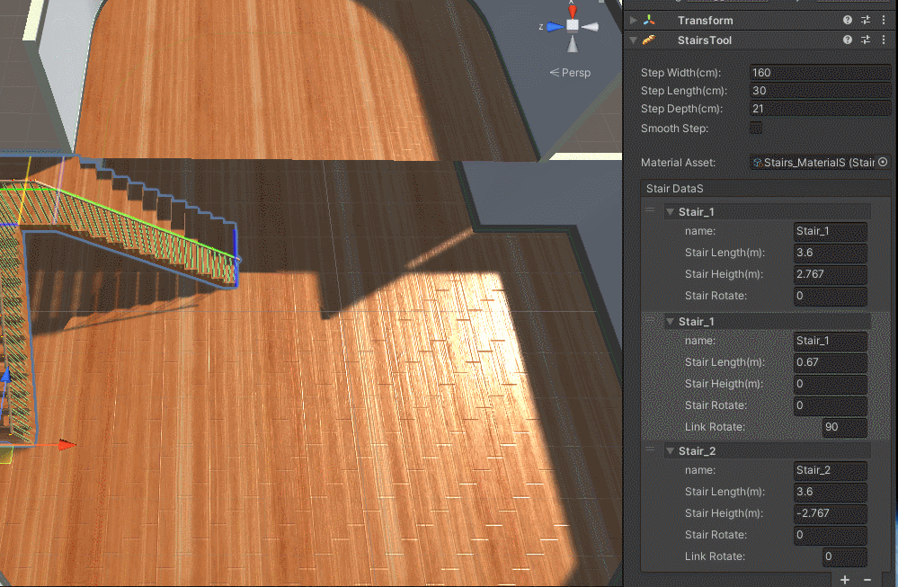
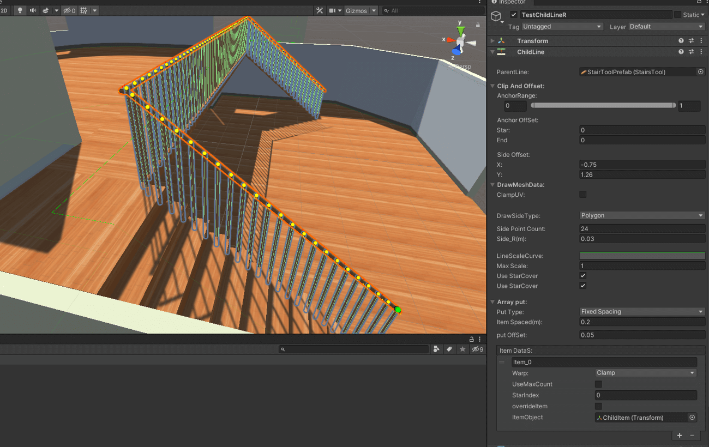

LineBuildTool是基于线段编辑的建筑模型构建工具
LineBuidTool目前包含BuildLine、StairsTool、ChildLine三种工具
BuildLine工具通过可编辑线段和可配置的开孔数据创建建筑的墙壁，门和窗户的开孔，地板和平面房顶
StairsTool工具通过配置数据来创建多段连接的楼梯，同时根据楼梯的走向也会生成相应的线段数据
ChildLine工具在父线段数据的基础上进行裁剪和偏移，来生成一条新的线段，在新生成的线段上可以进行样条线网格绘制和阵列摆放物体 (此案例中用ChildLine工具生成了楼梯的栏杆)
E-mail: 2568041052@qq.com